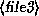
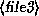

A key feature of most Unix shells is the ability to reference more than one filename using special characters. These so-called wildcards allow you to refer to, say, all filenames which contain the character ``n''.
The wildcard ``*'' refers to any character or string of characters in a filename. For example, when you use the character ``*'' in a filename, the shell replaces it with all possible substitutions from filenames in the directory which you're referencing.
Here's a quick example. Let's suppose that Larry has the files frog, joe, and stuff in his current directory.
/home/larry# ls
frog joe stuff
/home/larry#
To access all files with the letter ``o'' in the filename, we can use the command
/home/larry# ls *o*
frog joe
/home/larry#
As you can see, the use of the ``*'' wildcard was replaced with all substitutions which matched the wildcard from filenames in the current directory.
The use of ``*'' by itself simply matches all filenames, because all characters match the wildcard.
/home/larry# ls *
frog joe stuff
/home/larry#
Here are a few more examples.
/home/larry# ls f*
frog
/home/larry# ls *ff
stuff
/home/larry# ls *f*
frog stuff
/home/larry# ls s*f
stuff
/home/larry#
The process of changing a ``*'' into filenames is called wildcard expansion and is done by the shell. This is important: the individual commands, such as ls, never see the ``*'' in their list of parameters. The shell expands the wildcard to include all of the filenames which match. So, the command
/home/larry# ls *o*
is expanded by the shell to actually be
/home/larry# ls frog joe
One important note about the ``*'' wildcard. Using this wildcard will not match filenames which begin with a single period (``.''). These files are treated as ``hidden'' files---while they are not really hidden, they don't show up on normal ls listings, and aren't touched by the use of the ``*'' wildcard.
Here's an example. We already mentioned that each directory has two special entries in it: ``.'' refers to the current directory, and ``..'' refers to the parent directory. However, when you use ls, these two entries don't show up.
/home/larry# ls
frog joe stuff
/home/larry#
If you use the -a switch with ls, however, you can display filenames which begin with ``.''. Observe:
/home/larry# ls -a
. .. .bash_profile .bashrc frog
joe stuff
/home/larry#
Now we can see the two special entries, ``.'' and ``..'', as well as two other ``hidden'' files---.bash_profile and .bashrc. These two files are startup files used by bash when larry logs in. More on them in Section 3.13.3.
Note that when we use the ``*'' wildcard, none of the filenames beginning with ``.'' are displayed.
/home/larry# ls *
frog joe stuff
/home/larry#
This is a safety feature: if the ``*'' wildcard matched filenames beginning with ``.'', it would also match the directory names ``.'' and ``..''. This can be dangerous when using certain commands.
Another wildcard is ``?''. The ``?'' wildcard will only expand a single character. Thus, ``ls ?'' will display all one character filenames, and ``ls termca?'' would display ``termcap'' but not ``termcap.backup''. Here's another example:
/home/larry# ls j?e
joe
/home/larry# ls f??g
frog
/home/larry# ls ????f
stuff
/home/larry#
As you can see, wildcards allow you to specify many files at one time. In the simple command summary, in Section 3.4, we said that the cp and mv commands actually can copy or move multiple files at one time. For example,
/home/larry# cp /etc/s* /home/larry
will copy all filenames in /etc beginning with ``s'' to the directory /home/larry. Therefore, the format of the cp command is really
cp 
  ...
 ...

where  through
through  is a list of filenames to
copy, and
is a list of filenames to
copy, and  is the destination file or directory to
copy them to. mv has an identical syntax.
is the destination file or directory to
copy them to. mv has an identical syntax.
Note that if you are copying or moving more than one file, the
 must be a directory. You can only copy or move
a single file to another file.
must be a directory. You can only copy or move
a single file to another file.